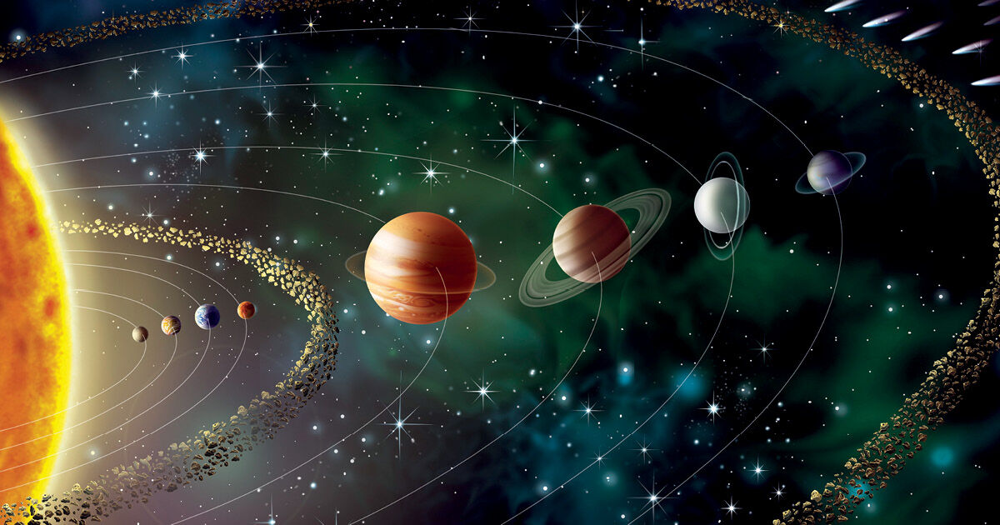

Sistema Solar
O Sistema Solar é um conjunto formado por oito planetas e outros corpos celestes, que orbitam o Sol,
a sua principal estrela. Está localizado na Via Láctea, uma das galáxias que formam o Universo.
São planetas do Sistema Solar: Mercúrio, Vênus, Terra, Marte, Júpiter, Saturno, Urano e Netuno.

Quantos planetas existem no Sistema Solar?
Atualmente, o Sistema Solar é oficialmente constituído por oito planetas e cinco planetas anões.
Curiosidades sobre o Sistema Solar
-
No máximo duas horas antes de o Sol nascer ou duas horas antes de o Sol se pôr, é possível avistar Mercúrio
a olho nu.
-
Um dia em Vênus é maior que um ano na Terra.
-
Em Marte, há diversos vulcões inativos. O maior deles é conhecido como Olympus Mons.
-
Em 1971, foi colocada na órbita de Marte a sonda Mariner, que fez fotos da superfície do planeta,
mostrando detalhes de até um quilômetro.
-
Júpiter possui mais de 60 satélites naturais de pequenas dimensões.
-
Saturno possui cerca de 60 luas.
-
A presença de metano na atmosfera de Netuno lhe confere a cor azulada.
-
Embora Mercúrio esteja mais perto do Sol, ele não é o mais quente. Vênus é quem ocupa esse posto,
uma vez que possui uma atmosfera composta por CO2, que cria uma espécie de efeito estufa no planeta,
elevando sua temperatura a mais de 460ºC.